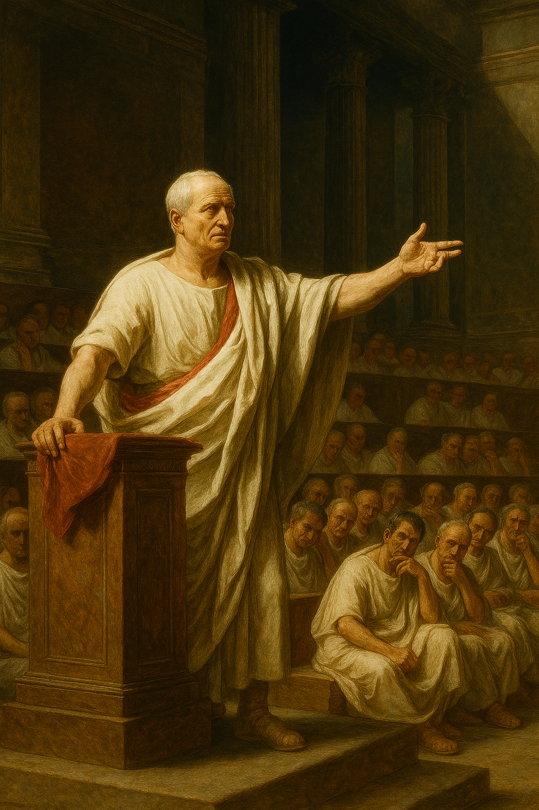

Plutarch’s biography of Marcus Tullius Cicero is the story of a man whose greatness lay not in the battlefield, but in the forum. Born of equestrian rank—a class below the patrician nobility—Cicero was a "new man" who, through sheer intellect and ambition, rose to become one of the most powerful figures in Rome. Plutarch paints him as a man of extraordinary talent, a brilliant orator, lawyer, and statesman whose influence was felt not through military might, but through the power of his words. His life was a constant struggle to defend the Roman Republic against the ambitions of the military strongmen who would eventually destroy it.
Cicero's career was a testament to the power of oratory in Roman society. Plutarch describes his rise as meteoric, winning a series of high-profile legal cases that established his reputation as the foremost speaker in Rome. His eloquence was not just a tool for personal gain; it was a weapon used to defend the very foundations of the Republic. His most famous achievement was his consulship, during which he uncovered and suppressed the conspiracy of Catiline, a plot to overthrow the government. In a series of powerful and impassioned speeches, the "Catiline Orations," he exposed the conspirators, saved the state, and earned the title of "Father of his Country."
Despite his political successes, Cicero was a man caught between two worlds. Plutarch portrays him as an intellectual who was often ill-suited to the brutal realities of Roman politics. He was a champion of the constitutional government and a staunch defender of the Senate's authority, but his political influence waned as the First Triumvirate of Caesar, Pompey, and Crassus consolidated power. Cicero was a man of principles who found it difficult to navigate a world of political compromise and violence. He often fled into philosophy during times of political turmoil, using his prodigious writing skills to produce treatises on rhetoric, law, and morality that have influenced Western thought for millennia.
Plutarch's biography of Cicero concludes with his tragic and brutal end. After Caesar's assassination, Cicero returned to the political arena, delivering a series of fierce speeches, the "Philippics," against Mark Antony, whom he saw as a new threat to the Republic. Antony, however, proved to be a far more ruthless adversary than Catiline. When the Second Triumvirate of Antony, Octavian, and Lepidus was formed, Cicero was one of the first names on their list of proscribed enemies. His death was a final, grim testament to the end of the Republic he so valiantly defended. Plutarch recounts how Cicero, in a final act of dignity, was killed by Antony’s agents, and his hands and head were displayed in the Roman Forum, a macabre symbol of the death of free speech and the end of an era. Cicero’s life, as told by Plutarch, is a profound and moving tragedy about the struggle of a man of words against a world of swords.